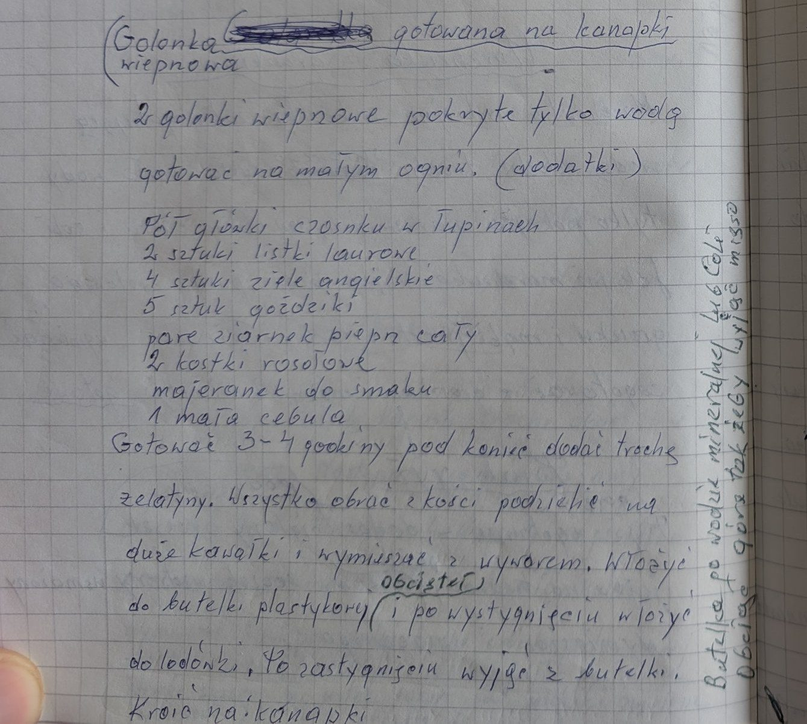

Golonka wieprzowa gotowana na kanapki


Składniki
- 2 golonki wieprzowe
- pół główki czosnku w łupinach
- 2 liście laurowe
- 4 ziarna ziela angielskiego
- 5 goździków
- parę ziaren pieprzu
- 2 kostki rosołowe
- majeranek do smaku
- 1 mała cebula
- trochę żelatyny
Przygotowanie
- Golonki zalać wodą tylko do przykrycia, dodać przyprawy i gotować na małym ogniu 3-4 godziny.
- Pod koniec dodać trochę żelatyny.
- Mięso obrać z kości, podzielić na duże kawałki i wymieszać z wywarem.
- Włożyć do plastikowej butelki z obciętą górą (np. po wodzie mineralnej) i po wystygnięciu wstawić do lodówki.
- Po zastygnięciu wyjąć z butelki i kroić na kanapki.
Oryginalny zapis
Golonka [skreślone] gotowana na kanapki
wieprzowa
2 golonki wieprzowe pokryte tylko wodą
gotować na małym ogniu. (dodatki)
Pół główki czosnku w łupinach
2 sztuki listki laurowe
4 sztuki ziele angielskie
5 sztuk goździki
parę ziarnek pieprz cały
2 kostki rosołowe
majeranek do smaku
1 mała cebula
Gotować 3-4 godziny pod koniec dodać trochę
żelatyny. Wszystko obrać z kości podzielić na
duże kawałki i wymieszać z wywarem. Włożyć
obciętej
do butelki plastykowej (i po wystygnięciu włożyć
do lodówki. Po zastygnięciu wyjąć z butelki.
Kroić na kanapki
[dopisek pionowo na marginesie:]
Butelka po wodzie mineralnej lub Coli
Obciąć górę tak żeby wyjąć mięso